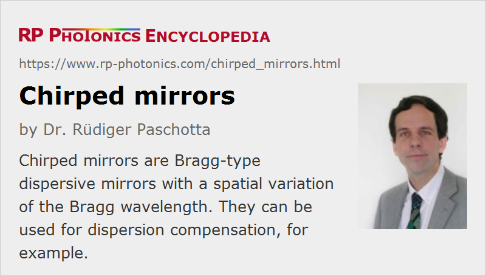

Chirped Mirrors
Definition: Bragg-type dispersive mirrors with a spatial variation of the Bragg wavelength
More general term: dielectric mirrors
German: gechirpte Spiegel
Categories: general optics, photonic devices, light pulses
How to cite the article; suggest additional literature
Author: Dr. Rüdiger Paschotta
A chirped mirror is a kind of dielectric dispersive mirror with a spatial variation of the layer thickness values. Such mirrors are used for dispersion compensation in mode-locked lasers, for example. Another interesting feature of such mirrors is that they make it possible to achieve a broader reflection bandwidth than ordinary Bragg mirrors. Due to the many dimensions of possible optimization, chirped mirrors are often sold as custom optics.
Principles of Dispersive Chirped Mirrors
The basic idea of chirped mirror designs [1] is that the Bragg wavelength is not constant but varies within the structure (along the propagation direction), so that light at different wavelengths penetrates to a different extent into the mirror structure and thus experiences a different group delay.
However, a naïve design directly based on this idea would not work: it would exhibit strong oscillations of the group delay and even more so of the group delay dispersion. This disturbing effect can to some extent be mitigated by numerical optimization of the layer structure, but this is difficult because the optimization has to be done in a multi-dimensional space (resulting from the large number of layers) where a huge number of local optima exist, most of which do not correspond to satisfactory designs.
Later, it was found [5] that the disturbing oscillations have two origins:
- There is a Fresnel reflection at the front face (the interface to air), which leads to strong additional dispersion as in a Gires–Tournois interferometer.
- The sudden “switching” of the coupling of counterpropagating waves from zero in air to a finite value in the structure causes a kind of impedance mismatch.
Both problems can be eliminated with a double-chirped design, which has two additional features:
- The coupling of counterpropagating waves is turned on smoothly by also varying the duty cycle, i.e., the ratio of optical thickness of high and low index layers. (For a duty cycle above or below 50%, the effective reflectance of a layer pair is reduced.)
- The Fresnel reflection is removed with an additional anti-reflection structure on top of the double-chirped section (not shown in Figure 1).
Even without numerical optimization, double-chirped designs can have a dispersion profile which relatively nicely matches the design goal. Further refinement is then achieved with numerical optimization, i.e., with fine tuning of the layer thickness values.
Application in Mode-locked Lasers
For mode-locked lasers with an ultrabroad bandwidth, as required for operation in the few-cycle regime, it is challenging to design mirrors with the corresponding ultrabroad reflection bandwidth, combined with proper chromatic dispersion over the most of that range. The factor limiting the bandwidth achievable is in most cases the difficulty of making anti-reflection structures with very small residual reflectance over a large bandwidth. This problem can be solved with so-called backside coated (BASIC) chirped mirrors [11]. The key idea of such a design is to interface the chirped mirror structure with a glass substrate rather than with air; the air–glass interface is then at a different location, and the effects of the residual reflectance of that (also AR-coated) surface can be eliminated by using a wedge shape for that glass piece.
Double-chirped mirrors (DCMs) are often used for dispersion compensation in mode-locked lasers, particularly for those with pulse durations below ≈ 20 fs. They are typically designed not only to compensate a constant group delay dispersion, but also to correct higher-order dispersion. However, there are limits concerning how much dispersion (and in particular higher-order dispersion) can be compensated with a double-chirped mirror. Possible solutions are to use a suitable combination of several mirrors, where the dispersion errors from different mirrors partially cancel each other, and to combine chirped mirrors with a prism pair. Another challenge arises from the tight fabrication tolerances; at least some of the layers typically have to be fabricated with a precision of the thickness of a few nanometers. The remaining wiggles in the group delay versus wavelength can be further reduced by using appropriate combinations of mirrors where the wiggles at least partially cancel each other.
Chirped Semiconductor Mirrors
It has been shown [10] that double-chirped mirror designs can also be used with semiconductor mirrors. Such mirrors can generate a much higher amount of dispersion, although in a much smaller bandwidth. They can be used for compensating the dispersion in a mode-locked laser with a single compact device even when e.g. a long pulse duration requires a high amount of anomalous dispersion for soliton mode locking.
Suppliers
The RP Photonics Buyer's Guide contains 15 suppliers for chirped mirrors. Among them:
Questions and Comments from Users
Here you can submit questions and comments. As far as they get accepted by the author, they will appear above this paragraph together with the author’s answer. The author will decide on acceptance based on certain criteria. Essentially, the issue must be of sufficiently broad interest.
Please do not enter personal data here; we would otherwise delete it soon. (See also our privacy declaration.) If you wish to receive personal feedback or consultancy from the author, please contact him e.g. via e-mail.
By submitting the information, you give your consent to the potential publication of your inputs on our website according to our rules. (If you later retract your consent, we will delete those inputs.) As your inputs are first reviewed by the author, they may be published with some delay.
Bibliography
| [1] | R. Szipöcs et al., “Chirped multilayer coatings for broad-band dispersion control in femtosecond lasers”, Opt. Lett. 19 (3), 201 (1994), doi:10.1364/OL.19.000201 |
| [2] | A. Stingl et al., “Sub-10-fs mirror-dispersion-controlled Ti:sapphire laser”, Opt. Lett. 20 (6), 602 (1995), doi:10.1364/OL.20.000602 |
| [3] | R. Szipöcs and A. Koházi-Kis, “Theory and design of chirped dielectric mirrors”, Appl. Phys. B 65, 115 (1997), doi:10.1007/s003400050258 |
| [4] | E. J. Mayer et al., “Ultrabroadband chirped mirrors for femtosecond lasers”, Opt. Lett. 22 (8), 528 (1997), doi:10.1364/OL.22.000528 |
| [5] | F. X. Kärtner et al., “Design and fabrication of double-chirped mirrors”, Opt. Lett. 22 (11), 831 (1997), doi:10.1364/OL.22.000831 |
| [6] | N. Matuschek et al., “Theory of double-chirped mirrors”, IEEE J. Quantum Electron. 33 (2), 295 (1998), doi:10.1109/2944.686724 |
| [7] | G. Tempea et al., “Dispersion control over 150 THz with chirped dielectric mirrors”, JSTQE 4 (2), 193 (1998), doi:10.1109/2944.686723 |
| [8] | N. Matuschek et al., “Theory of double-chirped mirrors”, JSTQE 4 (2), 197 (1998), doi:10.1109/2944.686724 |
| [9] | N. Matuschek et al., “Analytical design of double-chirped mirrors with custom-tailored dispersion characteristics”, IEEE J. Quantum Electron. 35 (2), 129 (1999), doi:10.1109/3.740733 |
| [10] | R. Paschotta et al., “Double-chirped semiconductor mirror for dispersion compensation in femtosecond lasers”, Appl. Phys. Lett. 75 (15), 2166 (1999), doi:10.1063/1.124953 |
| [11] | N. Matuschek et al., “Back-side-coated chirped mirrors with ultra-smooth broadband dispersion characteristics”, Appl. Phys. B 71, 509 (2000), doi:10.1007/s003400000426 |
| [12] | F. X. Kärtner et al., “Ultrabroadband double-chirped mirror pairs for generation of octave spectra”, J. Opt. Soc. Am. B 18 (6), 882 (2001), doi:10.1364/JOSAB.18.000882 |
| [13] | G. Tempea et al., “Tilted-front-interface chirped mirrors”, J. Opt. Soc. Am. B 18 (11), 1747 (2001), doi:10.1364/JOSAB.18.001747 |
| [14] | V. Pervak et al., “Dispersion control over the ultraviolet–visible–near-infrared spectral range with HfO2/SiO2-chirped dielectric multilayers”, Opt. Lett. 32 (9), 1183 (2007), doi:10.1364/OL.32.001183 |
| [15] | V. Pervak et al., “High-dispersive mirrors for femtosecond lasers”, Opt. Express 16 (14), 10220 (2008), doi:10.1364/OE.16.010220 |
See also: chromatic dispersion, dispersion compensation, dispersive mirrors, dielectric mirrors, laser mirrors, anti-reflection coatings
and other articles in the categories general optics, photonic devices, light pulses

This encyclopedia is authored by Dr. Rüdiger Paschotta, the founder and executive of RP Photonics Consulting GmbH. How about a tailored training course from this distinguished expert at your location? Contact RP Photonics to find out how his technical consulting services (e.g. product designs, problem solving, independent evaluations, training) and software could become very valuable for your business!
|  |
If you like this page, please share the link with your friends and colleagues, e.g. via social media:
These sharing buttons are implemented in a privacy-friendly way!